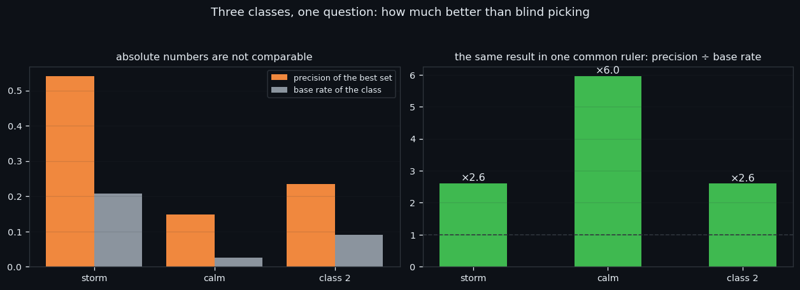
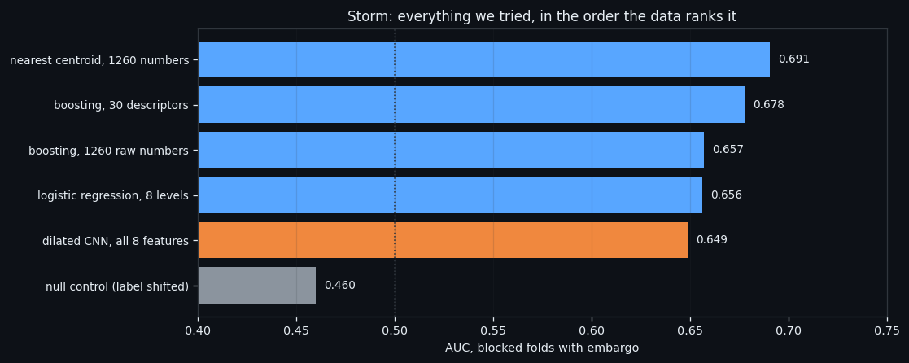
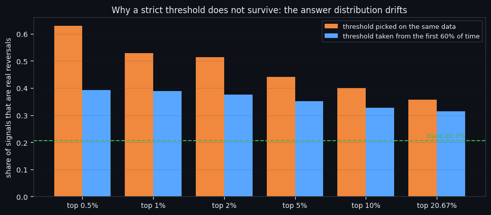
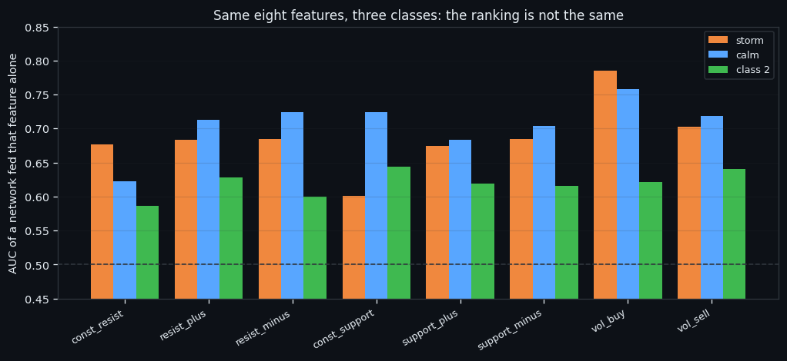

Three Classes, One Question: What It Takes to Separate a Reversal
Three market states, one question: can an order-book event that sits on a turning point be told apart from the ordinary events of its own class? This is the overview of that work — the three per-class studies side by side, every engine we tried in between, and the parts that hurt: a grid search that bought 0.02 AUC, a network on 1,680 numbers that lost to a single average, and a threshold that looked like 63% precision until it was asked to survive two months of new data, where it became 39%.
Full walkthrough — streamed from YouTube.
① Three classes and the ruler that makes them comparable
The point of all of this is not a leaderboard. A trading bot needs one thing from research: a moment when the book says something is about to change with enough purity that a position taken on it survives the 0.30% round-trip fee. Everything below is an attempt to isolate that moment inside one market state at a time.
Every window in this study is the same object: 210 seconds × 8 order-book features, one number per feature per second, and nothing else — no price, no time of day, no neighbouring windows. The label comes from an earlier study on this dataset: signals of a class merge into a group while the gap between them is under 10 minutes, and a group counts as a reversal if it touches a ZigZag pivot on the 2.3% grid within ±15 minutes. The label belongs to the group and is inherited by its windows.
The test is a random 10% of the events, held out and touched exactly once; of the rest, 15% is the validation set on which every choice is made. The network and all of its parameters are frozen for every class and every feature set — 64 channels, kernel 3, dilations 1-2-4-8-16-32, weight decay 1e-3, 16 epochs — because otherwise a comparison between classes would be measuring the parameter search, not the class.
Three classes carry enough reversals to train on. The fourth — the PCA-quiet pole — has one reversal window in 4,598, so it is out of this study by arithmetic, not by choice.
| class | windows | base rate | best set | precision | recall | AUC | vs base | |---|---|---|---|---|---|---|---| | storm | 5,249 | 20.7% | 5 features | 54.1% | 50.0% | 0.771 | ×2.6 | | calm | 29,303 | 2.5% | 8 features | 14.9% | 15.3% | 0.785 | ×6.0 | | class 2 | 21,704 | 9.0% | 6 features | 23.5% | 23.6% | 0.697 | ×2.6 |
The chart above is why that table needs two panels. On the left, precision and base rate side by side: storm looks like the best class by a wide margin. On the right, the same result divided by each class's own base rate — and the order changes. Calm, the class whose absolute numbers look weakest, turns out to be the one where the model beats blind picking by the largest factor, because reversals there are rare and genuinely unlike the rest of their class. Storm's high precision is mostly a high base rate: one in five storm events is a reversal to begin with.
For a bot the two panels answer different questions. The left one says how dirty the signal stream will be. The right one says how much the model actually knows.

② Everything we tried, and what it cost
Before the per-class work, the same question was attacked head-on inside the storm class, with everything we had. This is the part worth reading if you are deciding whether to spend a week on architecture.
| engine | AUC | null control | |---|---|---| | nearest centroid, 1260 numbers | 0.691 | — | | boosting, 30 descriptors | 0.678 | 0.459 | | logistic regression, 8 levels | 0.656 | 0.511 | | dilated CNN, all 8 features | 0.649 | 0.460 | | boosting, 1260 raw numbers | 0.657 | 0.469 |
Blocked folds in time with a 30-minute embargo; the null control is the same engine trained on a cyclically shifted label.
Read the bar chart from the bottom up. The null control sits at 0.460 — below 0.5, because a shifted label is not a fair coin. Above it, everything else lands in a band barely 0.05 wide. The dilated network on all eight features, the one that took the longest to train, is not at the top. The top is a nearest centroid: compute the average reversal vector, compute the average ordinary vector, and ask which one a new event is closer to.
Three specific attempts hurt more than the others:
The grid search. 60 architectures × 7 epoch checkpoints × 3 weight decays × 2 learning rates on one feature. The winner reached 0.682 AUC and 44.0% precision on the untouched test. A logistic regression on that same feature's single average level reached 0.661 and 38.5%. The entire search bought about 0.02 AUC, and the spread across all 60 architectures was 0.050 PR-AUC — less than the difference between two random splits.
More features made it worse. With one network per feature on blocked folds, `resist_plus` alone reached 0.677 AUC — higher than all eight features together (0.649). And `const_resist` reached 0.504 against a null of 0.501, which is to say nothing at all: the walls do not move at a reversal, so 210 of the network's input columns were pure noise.
Longer training made it worse. Sampling one training run at 14 checkpoints from 2 to 256 epochs: the peak is at 16 epochs (0.689 AUC on unseen windows), and by 256 epochs the model scores 0.620 on unseen data while climbing to 0.760 on the windows it was trained on. That is the textbook picture of overfitting, arriving after 16 epochs on 5,249 examples.

③ The threshold that did not survive time
Here is the part that decides whether any of this can be automated.
Take the best single-feature model and stop using the calibrated threshold. Take only the most confident answers instead — the top 0.5%, the top 1%, the top 5% — and precision climbs exactly as it should: 63.0% at the top 0.5%, 52.8% at the top 1%, against a base rate of 20.7%.
Then take that same threshold, compute it on the first 60% of the timeline, and apply it to the remaining 40% — which is what a live bot does by definition, because it cannot calibrate on data it has not seen yet.
| we take | precision when the threshold is fitted on the same data | precision when it comes from the first 60% of time | |---|---|---| | top 0.5% | 63.0% | 39.3% on 392 firings | | top 1% | 52.8% | 39.0% on 485 firings | | top 2% | 51.4% | 37.6% on 595 firings | | top 5% | 44.1% | 35.1% on 793 firings | | top 10% | 40.0% | 32.8% on 989 firings | | top 20.67% | 35.8% | 31.4% on 1,161 firings |
The bar chart shows the two columns as pairs. Orange is the optimistic number, blue is the honest one, the green line is the base rate. The gap is not overfitting in the usual sense — the model is the same model. What moves is the distribution of its answers: a score that was in the top 0.5% of the training period is in the top 8% of the next one, so the same numeric threshold fires 15 times more often and drags in everything ordinary.
That is the practical ceiling of this line as it stands: **about 39.3% precision from a frozen threshold**, against a base rate of 20.7%. Not zero — roughly twice blind picking — but nowhere near the 63% the optimistic column promises.

④ The pain, and what is left standing
What holds up. A reversal event is real and it is visible in the book. In all three classes the same signature appears — the inflow into both walls rises while the walls themselves stay put — and in all three classes a frozen network separates reversals from the ordinary events of their own class better than blind picking: ×2.6, ×6.0, ×2.6. The per-feature ranking differs by class, and that difference is itself a finding: storm is carried by volume, calm needs all eight features, class 2 has no leader at all.
What does not. Everything expensive. The grid search bought 0.02 AUC over a single average. The full 1,680-number input lost to one feature. Longer training made it worse after 16 epochs. And the strict threshold — the one operating point a bot would actually use — lost 40% of its precision the moment it had to survive unseen time.
The pain, stated plainly. The bottleneck in this work was never the model; it was that a reversal is not a different kind of event but the loud end of an ordinary one. Every method that assumes two categories — a classifier, a centroid, a threshold — is being asked to cut a continuum, and it cuts it at whatever level the recent past happened to have. That is why the between-class comparison had to be rebuilt around one common ruler (precision ÷ base rate) instead of raw precision, why the calm class turned out to be the strongest despite the worst-looking numbers, and why the honest threshold column is the only one we would hand to an automated system.
What this is worth for a bot. One usable rule, and it is a modest one: inside a class, the top few percent of the model's answers carry reversals at roughly twice the class's own rate, and that ratio survives an honest split in time. On its own that does not clear a 0.30% round-trip fee. It becomes interesting only in intersection — with a second, independent signal, or with a class rare enough that twice its base rate is already a tradeable purity. Both of those are the next studies, and both are now specified precisely enough to run.
The three per-class studies, with every table and chart behind the numbers above:
- Storm reversals — the loudest class, carried by volume - Calm reversals — the rarest reversals, and the largest advantage over chance - Class 2 reversals — the middle state, where no single feature wins

If this changed how you read the tape, the natural next step is We Found the Reversal Signal. Machine Learning Could Not Tell It Apart. —
We Found the Reversal Signal. Machine Learning Could Not Tell It Apart.
We Went Looking for the DNA of a Reversal. We Found a Ceiling Instead.
Volume Is the Fuel — Not the Steering Wheel
We recorded the Binance order book every second for six coins over five months and ran eighteen tests on what volume really does.
About Market Research Lab — What We Collect and Why
Most market commentary is storytelling.
Comments
Discussion is powered by GitHub. Enable it by adding secrets/giscus.json (repo IDs from giscus.app).